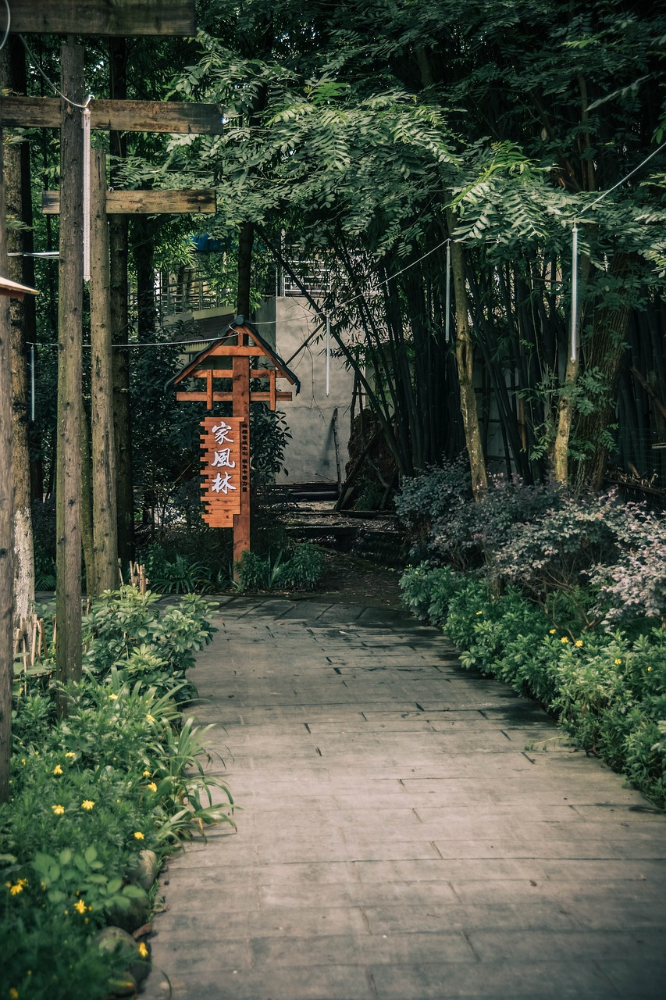
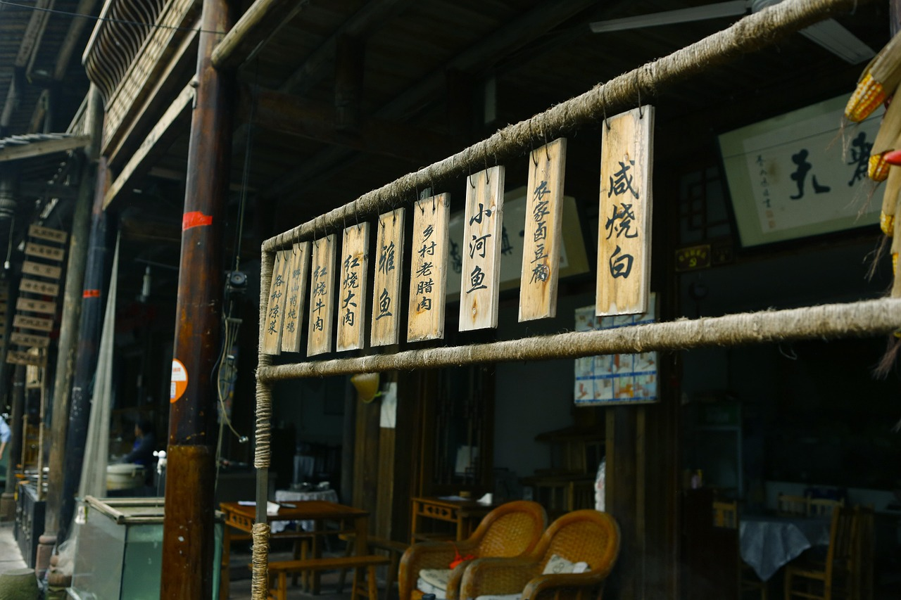

Trust me, traveling to Chengdu as an international visitor is nothing to stress about! Here, your passport functions as your "all-in-one golden ticket." As long as you have your original passport and a valid visa, booking accommodations, taking public transit, or reserving entry to major attractions is fully seamless. To ensure a completely scam-free itinerary, this guide is broken down into five core modules: Essential Documents, Attraction Bookings, Hotel Check-ins, Local Transportation, and Extra Survival Tips. Follow this step-by-step walkthrough, and you are good to go!
Mandatory Paperwork: First and foremost, you must carry your "Valid Passport + Chinese Visa (or Foreign Permanent Resident ID Card)." It is crucial to remember that this is your only legally recognized identification within mainland China. Keep it on your person wherever you go, as major attractions, hotels, and transport hubs conduct mandatory real-name verifications (relevant regulations can be cross-referenced on the official National People's Congress website).
Backup Precautions: Preparing for contingencies is always smart. Take high-resolution photos of your passport bio-data page and current visa page on your phone. If you happen to lose your physical passport during your trip, these digital backups will significantly speed up identity verification. Additionally, write down the emergency contact numbers of your local embassy or consulate in China.
Before departure, double-check that your passport is valid for at least 6 months beyond your intended stay and that your Chinese visa is active. Failing this, you risk being denied boarding or turned away at hotel front desks.
Currently, almost every major tourist site in Chengdu unconditionally supports passport-based ticket reservations. The only minor hurdle is that some official WeChat mini-programs require a Chinese phone number for user registration. If you experience this issue, do not panic—simply utilize alternative channels:
All Chengdu scenic ticket spots accept foreign passports for reservations and park entry. Additionally, sites support Foreign Permanent Resident IDs, Home Return Permits (for Hong Kong/Macau residents), and Mainland Travel Permits for Taiwan Residents.

Check-in Essentials: When checking into any lodging, you must present your physical passport and valid visa. The front desk staff is legally mandated to scan your biometric details and upload them to the local public security network in real-time. Checking in without a physical passport is strictly prohibited under Ministry of Public Security regulations.
The 24-Hour Rule: By Chinese law, all foreign nationals staying in commercial hotels or private residences must register temporary accommodations within 24 hours of arrival. If you stay at a standard hotel, the front desk automates this process for you during check-in. However, if you book a local homestay (like Airbnb), the host must assist you in filing an online declaration via the National Immigration Administration portal.
Choosing Accommodations: For a hassle-free experience, we strongly recommend prioritizing recognized international chains (e.g., Hilton, Marriott) or highly reputable domestic chains (e.g., Hanting, Ji Hotel). These establishments have extensive experience handling international guests, ensuring a seamless check-in workflow.
Strict Verifications: Please cooperate fully with front-desk personnel by providing accurate registration details (including entry port, current visa status, and expected departure dates). Any discrepancy between your passport data and the system declaration may result in the accommodation denying service.
The Metro Network: You can take your passport directly to the manual service window at any metro station to purchase a physical "Tianfutong Smart Card" and load cash. Alternatively, you can activate the digital "Chengdu Metro Ride Code" within WeChat or Alipay (though this occasionally prompts Chinese phone verification). Many updated subway turnstiles now support direct tap-to-ride functionality using international credit cards.
City Buses: Buses in Chengdu are incredibly affordable. You can drop exact cash change (typically 2 RMB per ride, no change provided) into the fare box or tap your physical Tianfutong card. Watch for distance-based routes, as long-distance buses require passengers to tap both when boarding and when exiting.
Ridesharing Apps: We highly recommend downloading the DiDi app. The platform fully integrates international payment gateways like Visa or Mastercard. Booking via DiDi guarantees upfront pricing and completely eliminates language barriers, since your driver receives the precise GPS coordinates directly. Flagging down traditional taxis and paying with RMB cash remains fully viable.

High-Speed Rail: Download the official "China Railway 12306" app to register your account with your passport number and buy tickets online. Alternatively, you can buy tickets at station windows using your passport. When boarding, skip the automatic biometic gates meant for domestic IDs and head directly to the **Manual Lane (人工通道)** on the far side, where staff will manually check your passport against the manifest. (For general transit safety, refer to standard advisory notifications from the Ministry of Foreign Affairs).
Scenic Express Shuttles: At centralized tourist transport hubs like the Xinnanmen Bus Station, you can present your passport to purchase direct shuttle bus tickets straight to major historical sites, bypassing complex transit transfers.
Avoiding Unlicensed Taxis: Your safety is paramount. Firmly ignore aggressive solicitors or "touts" at airport or rail exits offering cheap private day tours. These are notorious tourist traps. Always stick to official public transit lines or verified digital ridesharing networks.
Navigating Chengdu as an international tourist is straightforward if you anchor your trip around a few rules: keep your original passport and valid visa on hand; use international booking platforms to bypass local phone verification checks; stick to reputable hotels with established international registration experience; and utilize the metro or high-speed rail lines via manual lanes. With these preparations, you are set to experience an incredible journey!